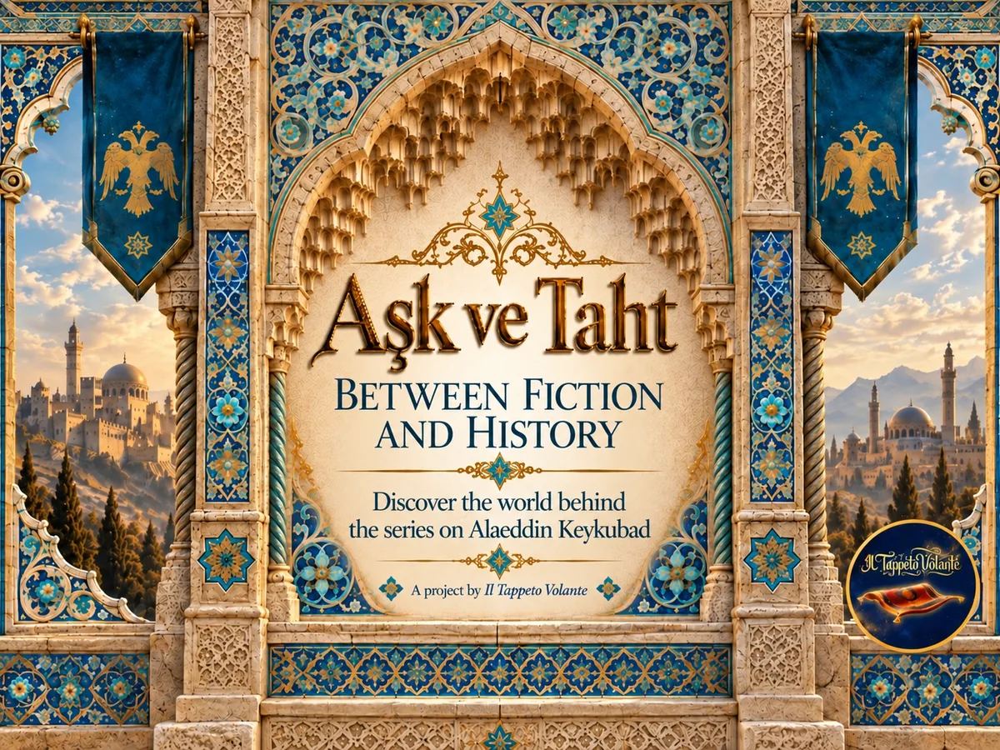

Episode 01
Before the Throne
When we first meet Alaeddin Keykubad, he is not yet the powerful Sultan remembered by history. He is a prisoner. But why did a Seljuk prince end up behind fortress walls?
Enter the historical dossier →
Follow Aşk ve Taht beyond the television story and into the world of 13th-century Anatolia, discovering the people, places and events behind the rise of Sultan Alaeddin Keykubad.
From characters and political struggles to cities, fortresses, art and archaeology, we compare the television narrative with historical sources and evidence. Sometimes history gives us a clear answer. Sometimes the sources disagree. And sometimes the answer is simply: we do not know yet.
Every episode opens a door onto the real world that inspired the series. Follow the story from fiction into history.
When we first meet Alaeddin Keykubad, he is not yet the powerful Sultan remembered by history. He is a prisoner. But why did a Seljuk prince end up behind fortress walls?
Enter the historical dossier →New episodes and historical discoveries will be added as the series unfolds.